This is the machinery behind the family — not the shopfront. The command station, the canon, the vault, the mesh, the forge and the ledger: the estate every generator here runs on. Three registers are kept apart on purpose — the doctrine the coach holds, the register said outward, and the strategy only the sovereign holds — and no surface is allowed to quietly merge them. Speak once here and the work fans out — the queue, the mesh, the sub-masterminds — and every answer returns to this one record.
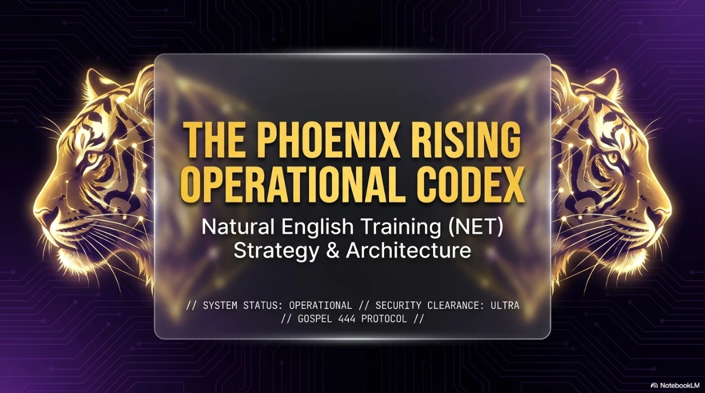
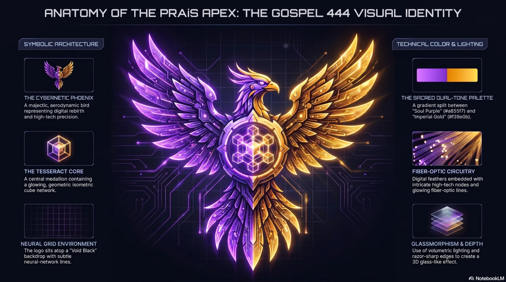
The divisions and the generators they hold, straight out of src/divisions.js — never a list typed by hand. Live means it opens right now; scaffold means the source exists and is not shipped; planned is a name and an intention. Nothing is marked live that is not.
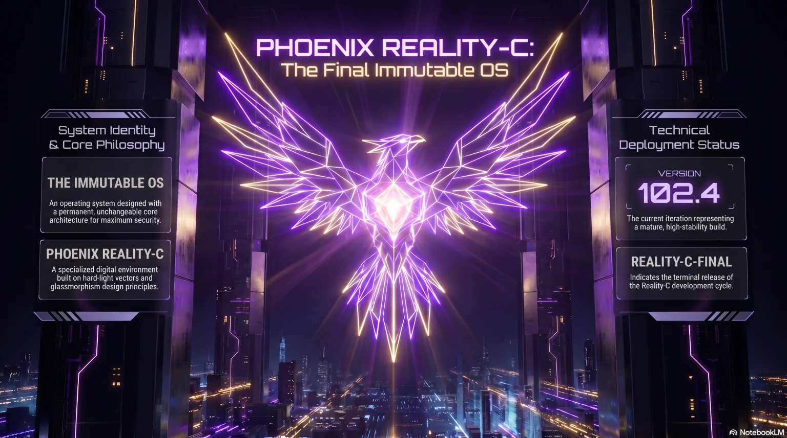
A run is written up as evidence, not as a story: what the system was doing when it broke, what was read out, the narrowest path that fixed it, what changed permanently, and the one law the run produced.
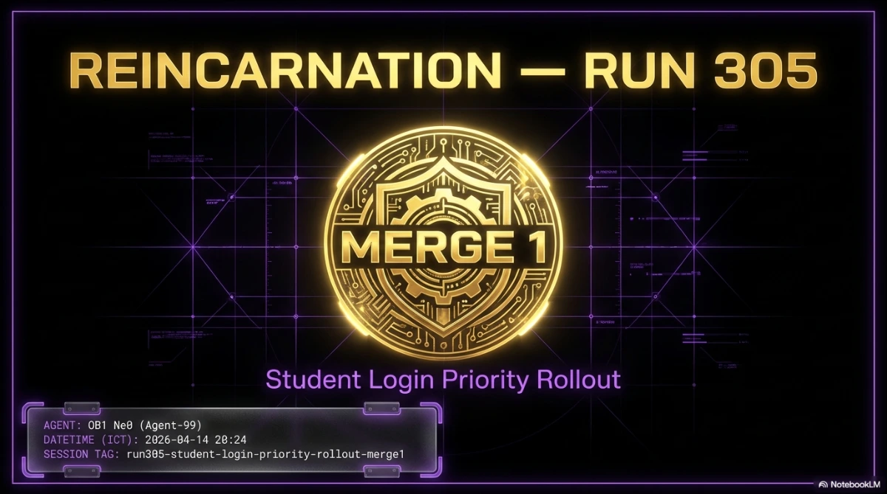
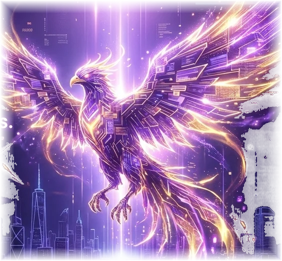
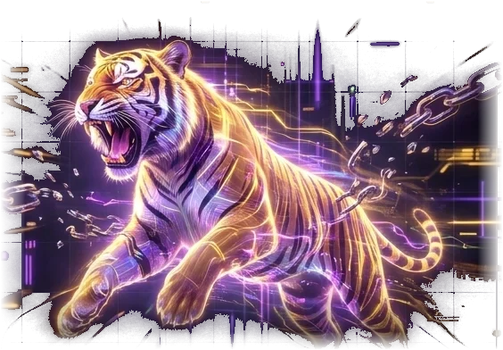
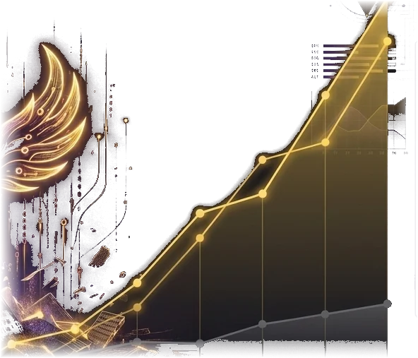
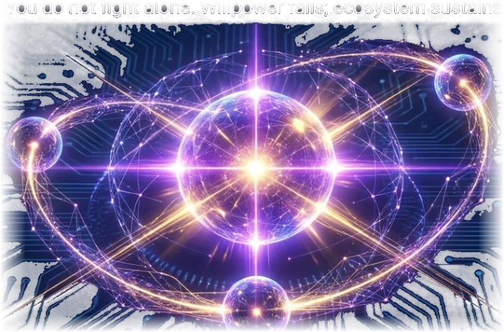
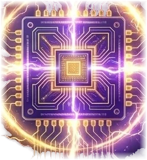
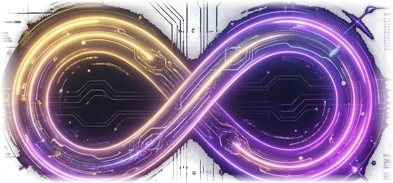
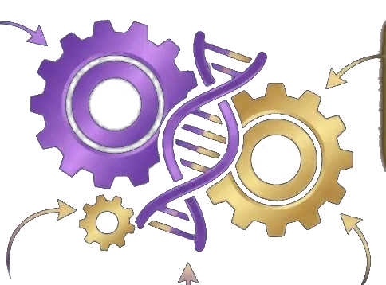
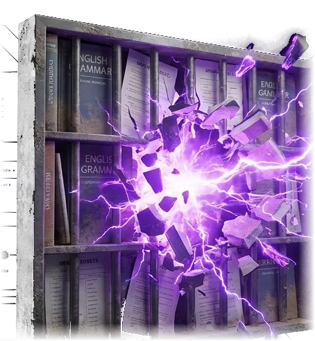
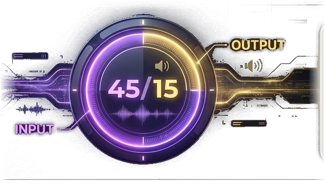
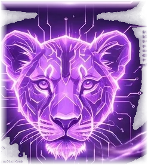
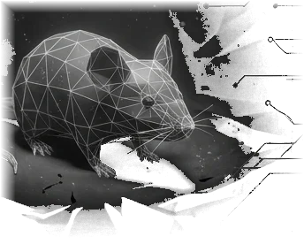
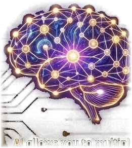
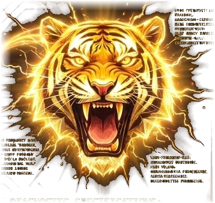